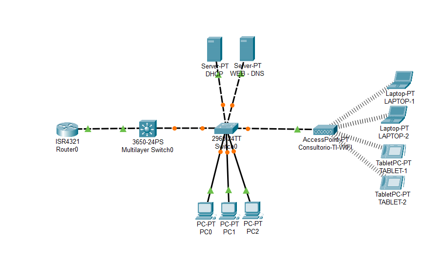
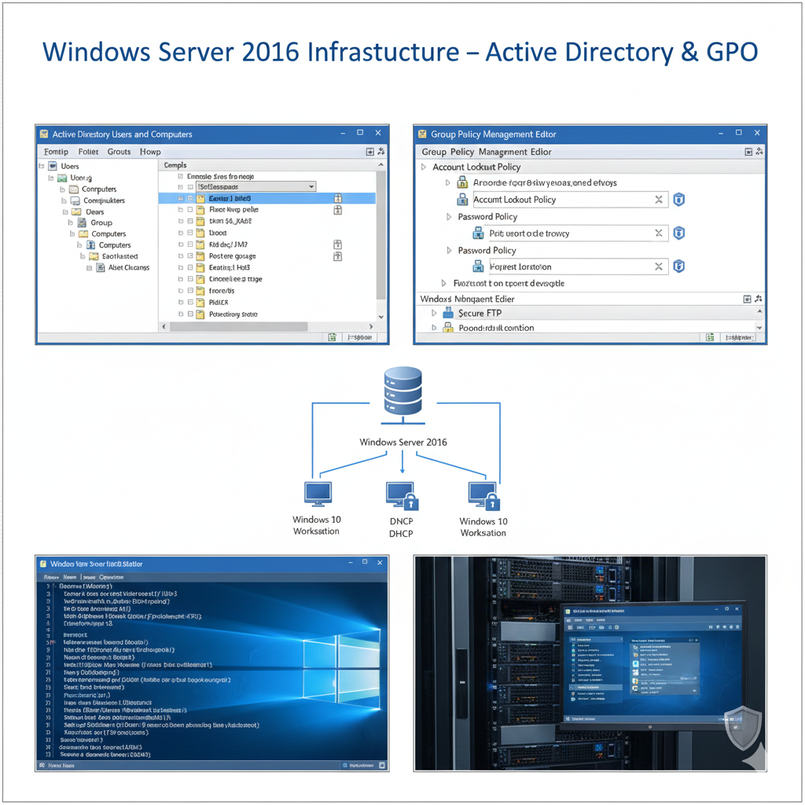

Sobre Mí
Soy un estudiante apasionado de Ingeniería de Soporte TI en 5to/6to semestre, con 6 meses de experiencia laboral en IT y participación en proyectos de logística. Me especializo en infraestructuras de red, ciberseguridad ofensiva/defensiva y entornos MultiCloud. Combino conocimientos académicos sólidos con experiencia práctica en proyectos reales, análisis de datos e inteligencia artificial.
Infraestructura de Redes
Diseño e implementación de redes corporativas seguras usando tecnologías Cisco
Ciberseguridad
Protección de sistemas y detección de vulnerabilidades con herramientas especializadas
Inteligencia Artificial & MultiCloud
Aplicación de IA moderna y gestión segura en entornos AWS, Azure y Google Cloud
Mi enfoque combina el conocimiento técnico con la curiosidad constante. Utilizo herramientas como Nmap, Metasploit y Wireshark para pruebas de vulnerabilidad, y he implementado dominios funcionales en Windows Server 2016 con políticas de seguridad avanzadas. Practico continuamente en plataformas como LetsDefend y Security Blue Team para mejorar mis habilidades en análisis SOC y respuesta a incidentes. Complemento mi perfil técnico con Power BI, Excel Avanzado y aplicaciones de Inteligencia Artificial moderna para análisis de datos de seguridad.
Mi Camino de Aprendizaje
Actualmente completando la carrera de Analista Junior de Ciberseguridad en Cisco (6/6 cursos completados). Mi formación combina:
- Educación formal en SENATI (Ingeniería de Soporte TI, 5to/6to semestre)
- Experiencia laboral de 6 meses en IT + Participación en Proyecto IT y Logística
- Certificaciones especializadas de Cisco Networking Academy y UNI
- Práctica en plataformas como LetsDefend y Security Blue Team para habilidades SOC
- Análisis de datos con Power BI y Excel Avanzado
- Inteligencia Artificial aplicada a procesos de seguridad y entornos MultiCloud
- Proyectos prácticos que aplican teoría a escenarios reales (Bug Bounty, OSINT, Desarrollo de Software)
Formación Académica
Ingeniería de Soporte TI
SENATI | 2023 - Presente
Quinto/Sexto semestre en curso
Cursos relevantes:
- Infraestructuras de Red
- Seguridad Informática
- Sistemas Operativos
- Administración de Servidores
- Virtualización
- Ciberseguridad Avanzada
- Análisis de Datos
Experiencia Laboral
Soporte y Operaciones IT
Experiencia Laboral en IT | 6 Meses
Experiencia práctica en entornos corporativos reales
Responsabilidades y Logros:
- Soporte técnico, mantenimiento y administración de infraestructura IT.
- Participación activa y destacada en Proyecto integral de IT y Logística.
- Optimización de procesos, resolución de incidencias y aplicación de buenas prácticas de seguridad.
Certificaciones
Certificaciones Cisco
Ethical Hacking
CompletadoFundamentos de pruebas de penetración y técnicas de hacking ético
Cybersecurity Essentials
CompletadoPrincipios fundamentales de seguridad de la información y ciberseguridad
Networking Essentials
CompletadoConfiguración y administración de redes con equipos Cisco
IoT Fundamentals
CompletadoFundamentos de Internet de las Cosas y dispositivos conectados
Linux Essentials
CompletadoAdministración básica de sistemas Linux y línea de comandos
Endpoint Security
CompletadoProtección de dispositivos finales y políticas de seguridad
Introduction to Modern AI
CompletadoFundamentos de Inteligencia Artificial, chatbots y computer vision
Networking Devices and Initial Configuration
CompletadoConfiguración inicial de dispositivos de red y fundamentos de routing
Junior Cybersecurity Analyst
Completado 6/6Carrera completa de 6 cursos - ¡Certificación Obtenida!
Formación Especializada Avanzada (UNI, Cloud, AI & Pentesting)
Formación complementaria de alto nivel en universidades e instituciones especializadas, abarcando normativas internacionales, computación en la nube, inteligencia artificial y técnicas avanzadas de hacking ético.
Ciberseguridad Analista SOC Splunk
Completado - UNIAnálisis y monitoreo de seguridad con Splunk en entornos SOC reales.
Fundamentos ISO 27001 + AI
CompletadoGestión de seguridad de la información y aplicación de IA en cumplimiento normativo.
Microsoft Azure Fundamentals + AI
CompletadoFundamentos de computación en la nube Azure e integración de servicios de IA.
CyberSOC + AI
CompletadoOperaciones avanzadas de SOC potenciadas con herramientas de Inteligencia Artificial.
Análisis de Malware
CompletadoTécnicas de análisis estático y dinámico de software malicioso.
Ethical Hacking + Pentesting Web & Evasión
CompletadoPruebas de penetración avanzadas en aplicaciones web y técnicas de evasión de defensas.
MultiCloud: AWS - AZURE - GOOGLE CLOUD
CompletadoArquitectura, seguridad y gestión de entornos multi-nube (AWS, Azure, GCP).
Certificaciones Security Blue Team
Formación especializada en ciberseguridad defensiva y ofensiva, enfocada en metodologías prácticas de pruebas de penetración e inteligencia de fuentes abiertas para investigaciones de seguridad.
Introduction to Pentesting
Fundamentos de pruebas de penetración, metodologías y herramientas esenciales para evaluaciones de seguridad
Introduction to OSINT
Técnicas de inteligencia de fuentes abiertas para investigaciones de seguridad y recolección de información
Certificaciones Clasefix
Certificaciones especializadas en análisis de datos y herramientas de productividad, complementando mi perfil técnico en ciberseguridad con habilidades de business intelligence.
Power BI
Introducción al análisis de datos, creación de dashboards básicos y business intelligence
Excel Avanzado
Dominio de funciones avanzadas, macros, tablas dinámicas y análisis de datos complejos
Insignias LetsDefend
Certificaciones prácticas en operaciones SOC que validan habilidades hands-on en análisis de amenazas, respuesta a incidentes y forense digital mediante entrenamiento en entorno real.
SOC Analyst
Operaciones fundamentales de Security Operations Center y monitoreo de seguridad
Phishing Analysis
Identificación y análisis avanzado de campañas de phishing y técnicas de ingeniería social
Network Forensics
Análisis forense de tráfico de red PCAP para investigaciones de seguridad
Threat Detection
Creación y gestión de reglas Sigma para detección proactiva de amenazas
Security Fundamentals
Fundamentos esenciales de redes y seguridad para operaciones SOC
¿Quieres ver mis progresos y puntuaciones en LetsDefend?
Ver Perfil LetsDefend¿Interesado en ver mis certificados oficiales?
Solicitar VerificaciónHabilidades Técnicas
Redes y Infraestructura
Ciberseguridad Ofensiva
Ciberseguridad Defensiva
Inteligencia Artificial & Automatización
Análisis de Datos & Business Intelligence
Sistemas & Administración
MultiCloud & Normativas
Idiomas
Proyectos Prácticos
Simulador de Redes Corporativas con Cisco Packet Tracer
Infraestructura LAN/WAN segura con segmentación VLAN y políticas de seguridad avanzadas - Nivel Básico e Intermedio

Tecnologías implementadas:
Resultados y Logros Técnicos:
- Topología escalable con conectividad total entre 15+ dispositivos (Servidores, PCs, Laptops, Tablets)
- Segmentación avanzada mediante VLANs para departamentos críticos de consultoría TI
- Políticas ACL implementadas para control de tráfico entre segmentos de red
- Servicios integrados DNS corporativo, servidor web y DHCP centralizado
- Configuración wireless con Access Point para dispositivos móviles y laptops
- Conectividad completa entre todos los dispositivos de la infraestructura
Infraestructura Corporativa Windows Server 2016
Dominio Active Directory con políticas GPO avanzadas y servicios enterprise

Tecnologías implementadas:
Resultados y Logros Técnicos:
- Dominio corporativo con 20+ usuarios y políticas de seguridad centralizadas
- GPO avanzadas para hardening de estaciones de trabajo Windows 10
- Servidor FTP seguro con autenticación AD y cifrado SSL/TLS
- Auditoría integral de eventos de seguridad y acceso a recursos
- Backup automatizado de configuración de dominio y políticas
Auditoría Caja Negra & OSINT (Bug Bounty)
Evaluación de seguridad web y reconocimiento de fuentes abiertas para bug bounty
Tecnologías implementadas:
Resultados y Logros Técnicos:
- bug-bounty-web-assessment: Auditoría de caja negra en aplicaciones web, identificando vulnerabilidades y vectores de ataque.
- osint-bugbounty-recon: Automatización y ejecución de fases de reconocimiento pasivo y activo para mapear la superficie de ataque.
- Generación de reportes técnicos con hallazgos, nivel de riesgo y recomendaciones de remediación.
PhishGuard AI v1.0.0 (ThreatLens)
Herramienta de software impulsada por IA para la detección y análisis de amenazas de phishing
Tecnologías implementadas:
Resultados y Logros Técnicos:
- Detección proactiva: Análisis de correos y URLs sospechosas utilizando modelos de IA para identificar patrones de phishing con alta precisión.
- ThreatLens: Módulo de visualización y correlación de indicadores de compromiso (IOCs) para una respuesta rápida.
- Desarrollo de una solución práctica que complementa y potencia las operaciones de un SOC moderno.
¿Interesado en ver estos proyectos en acción?
Puedo proporcionar demostraciones en vivo o revisar los detalles técnicos específicos.
Solicitar DemostraciónContacto
¿Listo para colaborar?
Estoy buscando oportunidades de prácticas profesionales o proyectos desafiantes donde pueda aplicar mis habilidades en redes, ciberseguridad, análisis de datos, entornos MultiCloud e inteligencia artificial. Si necesitas un profesional apasionado, con 6 meses de experiencia en IT y en constante aprendizaje, hablemos.
Disponibilidad Inmediata
Para prácticas o proyectos part-time
Aprendizaje Rápido
Capacidad de adaptación a nuevas tecnologías
Análisis de Datos
Habilidades en Power BI y Excel Avanzado
Inteligencia Artificial & Cloud
Conocimientos en AI aplicada a seguridad y MultiCloud